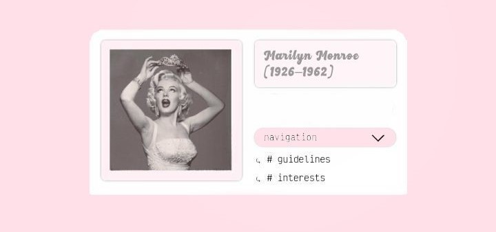

Algunos casos de suicidios dentro de la indutria del entretenimiento.
Robin Williams 1951–2014
Actor y comediante estadounidense, ganador del Oscar. Fue encontrado muerto en su casa por asfixia por ahorcamiento.
Padecia depresion severa y se le había diagnosticado demencia con cuerpos de Lewy, una enfermedad neurodegenerativa.
Kurt Cobain 1967–1994
Líder de la banda Nirvana y figura icónica del grunge. Murio por una herida de escopeta autoinfligida.
Suicidio confirmado en una nota encontrada. Luchaba contra la depresion, la adicción y la presion de la fama.
Chester Bennington 1976–2017
Vocalista de Linkin Park. Se suicido por ahorcamiento en su casa en California.
Habia hablado publicamente sobre su abuso infantil, sus adicciones y su lucha contra la salud mental. Su muerte ocurrio en el cumpleaños de su amigo Chris Cornell, quien tambien se suicido.
Marilyn Monroe 1926–1962

Actriz y simbolo sexual de Hollywood. Oficialmente su muerte fue un suicidio por sobredosis de barbituricos,
aunque ha sido objeto de muchas teorias. Luchaba con problemas de salud mental y adicciones.
Jonghyun 1990–2017
Cantante surcoreano del grupo SHINee. Murio por intoxicación con monoxido de carbono.
Dejó una carta donde expresaba su agotamiento mental. Su muerte genero un debate sobre la presion extrema en la industria del K-pop.